Typ. consultant detail
- Rips out the system your crew already knows
- Forces new software nobody asked for
- Weeks of downtime and retraining
- The team quietly goes back to the old way
- You paid for disruption, not results
Sheet A-000 · Cover · Issued for construction
Most “process improvement” walks in and forces your crew onto new software. Formwork does the opposite: we study the way your team actually works, find where the hours leak, and build automation into the tools you already run.

Your PM is re-entering the same data into Procore and QuickBooks — every job, both directions.
Your estimator is working until midnight because the bid package landed Thursday and it’s due Monday.
Your office manager is chasing submittals by email because nobody trusts the tracking spreadsheet anymore.
These aren’t technology problems. They’re workflow problems — and new software won’t fix them if it doesn’t fit how your team actually operates.
Formwork is a small shop that fixes the back-office grind in construction businesses — the bidding, the follow-ups, the paperwork that eats your week.
We spend a couple of days mapping how your operation really runs — where the hours go, where things stall, and what’s worth fixing first. You get a plain-English plan, whether you hire us to build it or not.
03.20We build the fixes — automated follow-ups, bid prep, scheduling, paperwork, reporting — tailored to your exact workflow, not a one-size template.
03.30Everything plugs into what you already pay for — Procore, Buildertrend, QuickBooks, spreadsheets, email. No new platform, no migration, no relearning.
We watch how your team actually works — the bids, the hand-offs, the paperwork. You get a clear map of where the hours go and the fixes worth doing first.
We build the automation inside the tools you already run. Rolled out quietly alongside your current process, so nothing stops while it proves out.
We track the hours saved against where you started and keep it tuned as your jobs, crew, and season change. The value is something you can see — not a slide.
A work-study is fixed-fee, and you keep the plan either way. Hire us to build, and the fee is credited toward the work.
Book a Work-StudyEvery construction business is different, but where the hours go is surprisingly similar.
Use your own numbers. This planning estimate shows what repetitive office work may be costing before any automation is proposed.

Deliverable preview A field-ready plan your team can keep, whether or not Formwork builds the fixes.
Annual opportunity
Based on 52 operating weeks. Illustrative planning estimate only; actual savings depend on workflow and implementation.
Dominic spent years watching the same problems eat hours across every GC and sub he worked with — the double-entry, the bid scrambles, the submittals lost in email. Noah spent years building systems that automate messy operations without forcing people onto new tools. They met in Denver and realized they were solving the same problem from opposite ends. Formwork is what happened next.
Builds the automation behind Formwork — and has spent years turning messy operations into systems people actually use.
Years in the field watching this problem up close. Makes sure everything Formwork builds survives contact with a real jobsite.
Tell us what’s eating your week. We’ll start with a work-study and show you exactly where the time is going — before we change a thing.